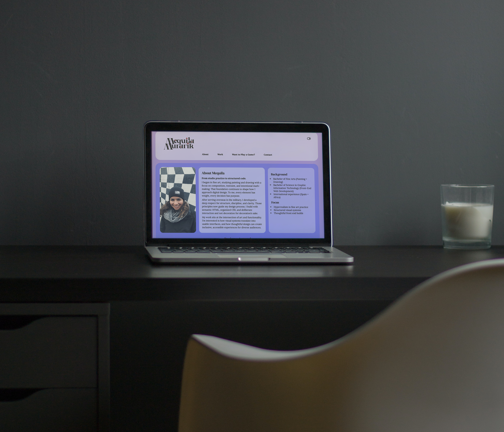

Mequila Murarik Design Website
Role: Designer + Front-End Developer
Objective: Create a personal portfolio website to showcase work in design, web development, and fine art while establishing an online presence.
Process: I began by outlining the site structure and creating wireframes to define layout and user flow. I then developed a visual direction using my established typography and color system. The site was built using semantic HTML, organized CSS, and JavaScript for interactivity.
Result: The final product is a clean, functional portfolio that reflects my personal brand and demonstrates both design and front-end development skills.
Tools: HTML, CSS, JavaScript